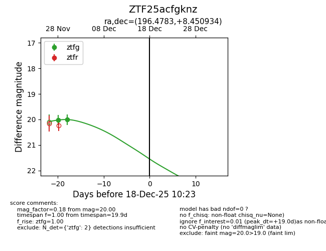
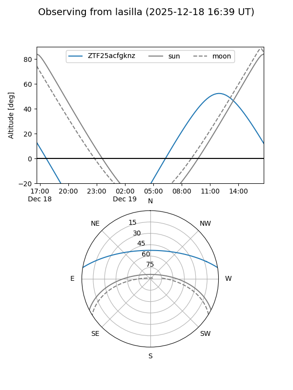

ZTF25acfgknz
Target ZTF25acfgknz at 2025-12-18 11:17
Aliases and brokers:
FINK: fink-portal.org/ZTF25acfgknz
Lasair: lasair-ztf.lsst.ac.uk/objects/ZTF25acfgknz
ALeRCE: alerce.online/object/ZTF25acfgknz
alt names
ZTF25acfgknz (ztf,fink_ztf)
Coordinates:
equatorial (ra, dec) = 196.4783,+8.45093
equatorial (HMS+DMS) = 13:05:54.80,+08:27:03.36
galactic (l, b) = (313.9942,+71.01112)
Photometry
last ztfg=20.00
2 ztfg detections
Lightcurve

Visibility


Additional plots